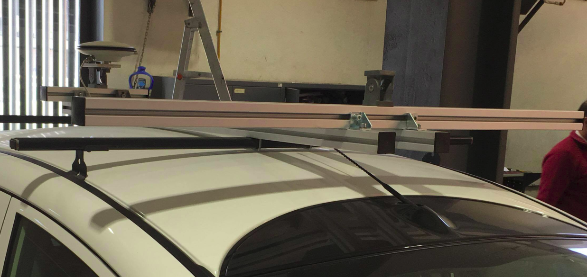

On the first week I start to install the camera supports on the car roof (figure below). However, now it's necessary to machine the part that will suport the camera on the rotative support and to 3D print the box that will protect the camera.
Then, I start to implement some algorithms on the developed architecture. The first one it was a ROS package that scans the image captured by the camera looking for white, yellow and red lines and calculates the error in pixel from the middle of the lane. It subscribes the "image_topic" topic and publishes the error value on the "lane_detection" topic. The implementation of this algorithm it was easy but I think that the results weren't the desired because I want algorithms that are able to detect the road lanes in terms of image position.
So I had to start digging on GitHub in order to get a reasonable algorithm and I found the ROS package Lane_Detector developed by Nsteel and where he implemented Classic Computer Vision Techniques. This algorithm brought several problems to solve in terms of libraries versions because it uses the OpenCV 2 and ROS Indigo versions. Finally, I solved the problems and I think that I achieve an important stage in my journey, because I think that this algorithm is robust and uses some interesting techniques like the Kalman Filter, which is a filter used to track an object. This filter is relevant to my project because sometimes the road lanes are undetectable and this algorithm allows to predict where the lane is, based on previous lanes detections. One disadvantage of this algorithm is that I can't show a visual result because the algorithm uses the OpenCV 2, which cause an error when using imshow OpenCV function (due to GTK versions). However I'll try to solve that. Itś important to refer that this algorithm has 3 subscribed topics:
-/image (sensor_msgs/Image): Input image.
-/camera_info (sensor_msgs/CameraInfo): Camera calibration data.
-/lane_detector/driving_orientation (std_msgs::Int32): Topic to change lane. 0 to drive on the right and 1 to drive on the left.
And on published topic:
/lane_detector/lane (lane_detector::Lane): returns the lanes positions on the road.